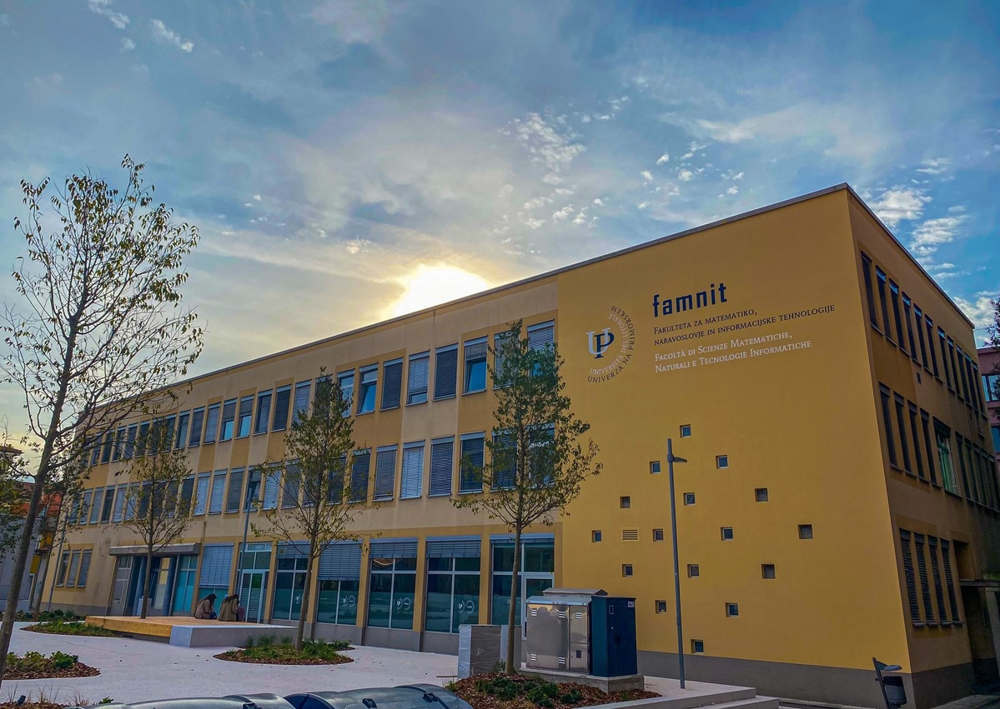

University of Primorska
Faculty of Mathematics, Natural Sciences and Information Technologies
Study Programs

CONTACT
University of Primorska
Faculty of Mathematics, Natural Sciences
and Information Technologies
Glagoljaška 8
SI-6000 Koper
Slovenia
+386 (5) 611 75 70 (administration office)
+386 (5) 611 75 75 (student services)
+386 (5) 611 75 71
info@famnit.upr.si
referat@famnit.upr.si
copyright